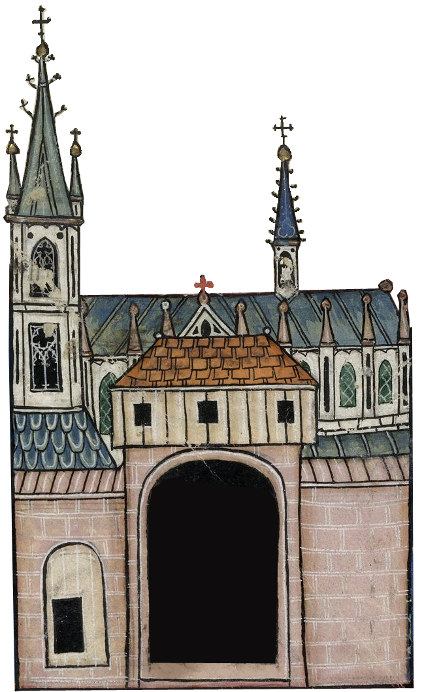
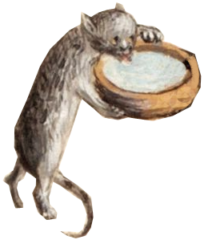
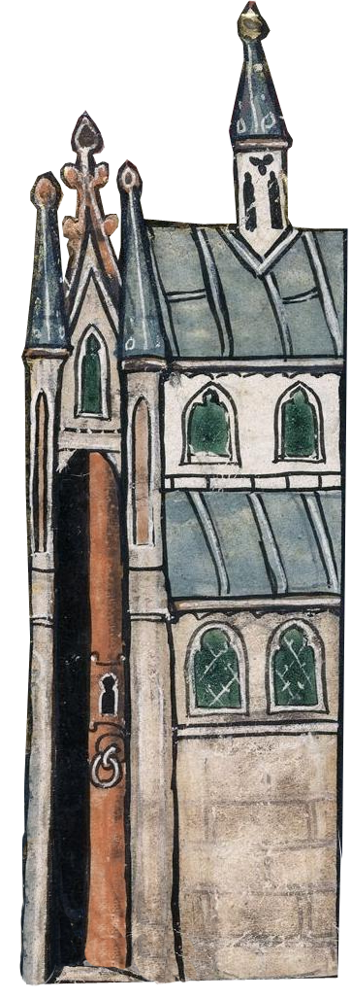
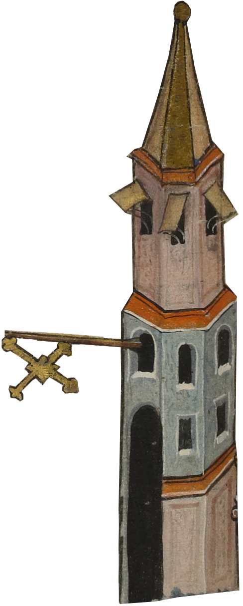
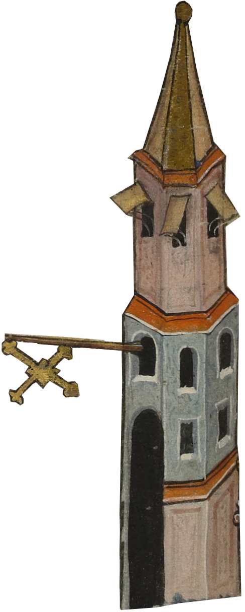
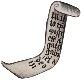
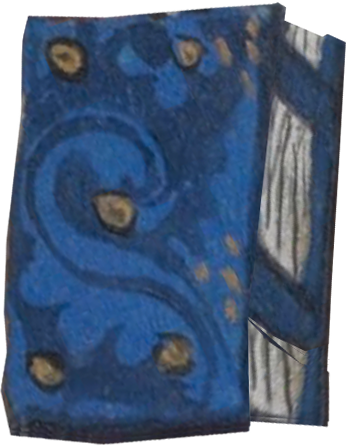

| Image | Location | Description | Source |
|---|---|---|---|
| Parish | A cat cleaning its bumhole. |
Book of hours (Ms. Charlotte of Savoy) France, Paris, ca. 1420-1425, MS M.1004 fol. 172r. NY, Morgan Library & Museum. |
|

|
Parish | A person entering a building. |
Le Roman de la Rose, par Guillaume de Lorris et Jean Clopinel, ou de Meun. Bibliothèque nationale de France, Département des manuscrits, Français 24388, fol. 2r. |

|
Parish | “Fox, walking on hind legs, holding walking stick with forelegs, with basket of chickens strapped to his back (Fable: Fox and Chickens)” In this case used as a symbol of pilgrimage; travel. |
Book of hours (Ms. Charlotte of Savoy) France, Paris, ca. 1420-1425, MS M.1004 fol. 157r. NY, Morgan Library & Museum. |
| Parish | Church |
Vita beatae Hedwigis: Nuns from Bamberg Settling at the New Convent. Unknown artist/maker, 1353. Ms. Ludwig XI 7 (83.MN.126), fol. 56. |
|

|
Postroom | A floating hand holding a quill. |
Libro degli uomini famosi. Italy, Venice, ca. 1405. MS G.36 fol. 116r. |
|  | Churchyard | Church |
Estoire del Saint Graal, La Queste del Saint Graal, Morte Artu. France, N. (Saint-Omer or Tournai?) Date 1st quarter of the 14th century Royal 14 E III f. 93v Arthur bidding farewell to his knights. |
| Churchyard | Wooden fence |
Pierre le Fruitier, dit Salmon,Réponses à Charles VI et Lamentation au roi sur son état. Salmon, Pierre (13..-14.. ; chroniqueur). Maître de la Mazarine. Enlumineur. Folio 61v. |
|
| Churchyard | Trees/forest |
A Hunter and a Dog Examining a Deer's Fraying Place. Unknown artist/maker, about 1430–1440. Ms. 27 (87.MR.34), fol. 52 |
|
| Churchyard | Bell |
Pontifical - caption: 'Leper with bell'. Lansdowne 451, f.127, circa 1400. |
|
| Churchyard | A cat dressed in a monk’s cowl. |
Horae ad usum Rotomagensem, 1460-1470. Amboise, George d' (1460-1510). 37v. |
|
| Churchyard, church porch | An anthropomorphic cat dressed in a nun’s habit. |
Book of hours
[Horae beatae Virginia Mariae ad usum Romanum, cum calendario]. p. 206, ca. 1490. |
|
| Cemetery | Church |
Saint Hedwig Offering Hospitality; Saint Hedwig Presenting Her Daughter Gertrude to the Convent of Trebnitz Ms. Ludwig XI 7 (83.MN.126), fol. 18v Unknown artist/maker, 1353 |
|
| Cemetery, Chapel | Wooden fence in front of a landscape. Gate |
A Wolf Caught in a Fenced Trap Baited with a Lamb Ms. 27 (87.MR.34), fol. 105v Unknown artist/maker, Unknown artist/maker |
|
| Cloister | A well enclosed by a woven fence. |
Speculum Humanae Salvationis. Sarnen, Benediktinerkollegium, 1427. Cod. membr. 8, f. 6r. |
|
| Cloister | Building; stairs leading into it. |
Vita beatae Hedwigis: Saint Hedwig Offering Hospitality. Unknown artist/maker, 1353. Ms. Ludwig XI 7 (83.MN.126), fol. 18v. |
|
| Cloister | Building; rear view. |
Vita beatae Hedwigis: The Self-Flagellation of Saint Hedwig. Unknown artist/maker, 1353. Ms. Ludwig XI 7 (83.MN.126), fol. 38v. |
|
| Hortulus, inn | Patch of grass |
A Hunter and a Young Boy Ms. 27 (87.MR.34), fol. 45 Unknown artist/maker, about 1430–1440 | |

|
Hortulus | Walls enclosing a garden; with entryway. |
Speculum humanae salvationis. Nordwestdeutschland, um 1360; [13] - 7r. |

|
Hortulus | Walls enclosing a garden; with well and trees. |
Speculum humanae salvationis. Nordwestdeutschland, um 1360; [13] - 7r. |
| Hortulus | Snail |
(via www.bestiary.ca) British Library, Additional MS 42130 (The Lutterell Psalter), folio 159r. | |
| Hortulus | Poppy |
Gart der Gesundheit, Cuba, Johannes von [um 1485/86] 290 CXLIIv | |
| Hortulus | Clover |
Gart der Gesundheit, Cuba, Johannes von [um 1485/86] 378 CLXXXVIv | |
| Hortulus | Hyssop |
Gart der Gesundheit, Cuba, Johannes von [um 1485/86] 403 CXCIXr | |
| Hortulus | Flax |
Gart der Gesundheit, Cuba, Johannes von [um 1485/86] 236 CXVv | |
| Hortulus | Willow |
Gart der Gesundheit, Cuba, Johannes von [um 1485/86] 346 CLXXv | |
| Hortulus | “Dollwurz.” Used as depiction of nightshade |
Gart der Gesundheit, Cuba, Johannes von [um 1485/86] 398 CXCVIv | |
| Hortulus | Violet |
Ortus sanitatis, p.470. Mainz : Jacob Meydenbach, 1491. | |
| Hortulus | Marygold |
Gart der Gesundheit, Cuba, Johannes von [um 1485/86] 122 LVIIIv | |
| Hortulus | St. John’s Wort |
Gart der Gesundheit, Cuba, Johannes von [um 1485/86] 406 CCv | |
| Hortulus | Valerian |
Gart der Gesundheit, p.447. Hamsen Schönsperger, 1487. | |
| Hortulus | Rosemary |
Gart der Gesundheit, p.41. Hamsen Schönsperger, 1487. | |
| Hortulus | Elder |
Gart der Gesundheit, p.380. Hamsen Schönsperger, 1487. | |
| Hortulus | Wormwood |
Gart der Gesundheit, p.12. Hamsen Schönsperger, 1487. | |
| Hortulus | Mugwort |
Gart der Gesundheit, Cuba, Johannes von [um 1485/86] 11 IIIr | |
| Hortulus | Mint |
Gart der Gesundheit, p.279. Hamsen Schönsperger, 1487. | |
| Hortulus | Lavender |
Gart der Gesundheit, Cuba, Johannes von [um 1485/86] 234 CXIVv | |
| Hortulus | Ribwort plantain |
Gart der Gesundheit, p.343. Hamsen Schönsperger, 1487. | |

|
Hortulus | Caraway |
Gart der Gesundheit, p.149. Hamsen Schönsperger, 1487. |

|
Workshop | “Burgunderkriege: Die Beute von Grandson wird bis zur Verteilung im Luzerner Wasserturm aufbewahrt (1476)”. In this case used as an artisan’s workshop. |
Eidgenössische Chronik des Luzerners Diebold Schilling (Luzerner Schilling). Luzern, Korporation Luzern, 1513. S 23 fol., p. 202. |
| Workshop | Golden room decoration |
Leaf from a Book of Hours: a Funeral Service. 1st quarter 14th century French (Artist) | |
| Chapel, Altar | Table |
Hugo von Trimberg: Der Renner · Johann Hartlieb: Alexanderroman. Cologny, Fondation Martin Bodmer, Cod. Bodmer 91, f. 18r. | |

|
Inn | Two neighbouring two-story houses and a pillar inbetween them. |
The Crusader Bible. Paris, France ca. 1244–1254 David's Lust . MS M.638, fol. 41v |
| Inn | Treasure chest |
Book of Hours; Flemish, early 14th century; @trincollcam MS B.11.22, f. 213r. | |

|
Inn, Library | A floating arm holding a book; Pink book |
Pontificale ecclesiae beatae Mariae Trajectensis. Master of Catherine of Cleves, ca. 1450. p. 75. thankyou baalbek |

|
Bedchamber | Interior view of a house, with entrance |
Blinding of Tobit, La Bible Historiale, part 4 (Bible Historiale of Edward IV). BL Royal 15 D I, f. 18. |
| Bedchamber | Clothes rack with two rags and a hose. |
Amb. 317.2° (Mendel I), 1489ti. Folio 107 recto. | |
| Bedchamber | Peculiar table with books |
Français 1177, Christine de Pizan (1364?-1430?). fol.3v. | |
| Bedchamber | Dish cabinet |
Fleur des histoires. Français 297, Jean Mansel (1400?-1473?). fol.1r. | |
| Bedchamber | Rug |
the sin of adultery, British Library MS Royal 6 E VI f. 61. | |
| Bedchamber | A cat cleaning its hind legs. |
Book of hours (Ms. Charlotte of Savoy) France, Paris, ca. 1420-1425, MS M.1004 fol. 125v. NY, Morgan Library & Museum. | |
| Bedchamber | Coat |
Amb. 317.2° (Mendel I), 1489. Folio 107 recto. | |
|  | Church porch | Kitten drinking from a bowl of milk |
Trivulzio Book of Hours. Belgium--Flanders, 1470. Image 228. |
| Church porch | Cat |
Breviary Italy, probably Taranto, 1350-1400 MS M.200 fol. 462v | |
| Church porch | Porridge |
Fleur des histoires. Français 297, Jean Mansel (1400?-1473?). fol.1r. | |

|
Church porch | Interior view of a building. |
Genève, Bibliothèque de Genève, Ms. fr. 85 William of Tyre, History of the Crusades translated into French, with an anonymous continuation to the year 1229 f. 12v |
|
|
Church porch | Hallway |
MS 32,513 Defensorium inviolatae virginitatis Mariae. Franciscus, de Retza, ca. 1343-1427, National Library of Ireland. Department of Manuscripts Image 35. |
|
|
Church porch | Passageway. In this case used as cloister. |
L'Epistre d'Othea = [ms. 9392] Christine de Pisan (ca. 1364-ca. 1431) Lille, 1460 Image 96. |
| Church porch | Cat eating from a red bowl/mug |
MS 32,513 Defensorium inviolatae virginitatis Mariae. Franciscus, de Retza, ca. 1343-1427, National Library of Ireland. Department of Manuscripts Image 49. | |

|
Inn | Brown dove |
THE ABERDEEN BESTIARY - MS 24 Aberdeen University Library, Univ Lib. MS 24) Early 13th Century fol. 27v. |
| White dove |
THE ABERDEEN BESTIARY - MS 24 Aberdeen University Library, Univ Lib. MS 24) Early 13th Century fol. 32r. | ||
| Inn | Sealed letter |
Spielkarte, Heiliges Römisches Reich, Bote (Zwei), aus dem sog. Hofämterspiel um 1455 Early 13th Century | |
| Parish | Clouds |
Apocalypse de S. Jean, en français. Colins Chadewe. Enlumineur, 1301-1400 f. 64r | |
| Inn | “Enclosing of an anchoress”. Anchoress; female hermit; face in the window of a house. |
Cambridge, Corpus Christi College, MS 079: Pontifical
dating from c. 1400 and c. 1410 201 of 592 • f. 96r | |
|  | Hortulus | Backdoor of the church. |
BL Royal 14 E III Estoire del Saint Graal, La Queste del Saint Graal, Morte Artu
France, 1300-1325 099r |
| Bedchamber door | Key |
Reimspruch auf das Armbrust- und Büchsenschießen in Worms 1575
Worms (?), um 1575 Cod. Pal. germ. 405 Flexel, Lienhart f. 5r | |
| Bedchamber door | Solemn building |
Speculum humanae salvationis
Nordwestdeutschland, um 1360; [13] - f. 9r | |

|
Inn | Woman (maybe a beguine) carrying a rabbit and bread in two baskets |
The Maastricht Hours
1st quarter of the 14th century (ff. 2v-13r), British Library Stowe Ms 17 |
 

|
Inn | Hanging sign of a shop or tavern |
Bodleian Library MS. Bodl. 264 1338–1410 Bodleian Libraries, University of Oxford fol. 83v |
| Chapel | Cathedral/ well endowed chapel |
Apocalipsis in dietsche
1401-1500 f. 1r Hunters Cutting Trees to Make Traps; Hunters with Bells Driving Hares into a Net. Unknown artist/maker, about 1430–1440. Ms. 27 (87.MR.34), fol. 99 & fol. 114 |
|
| Bedchamber, Cemetery | Cat edited to look like my own, Vinzi. |
Book of hours (Ms. Charlotte of Savoy) France, Paris, ca. 1420-1425, MS M.1004 fol. 172r. NY, Morgan Library & Museum. |
|
| Bedchamber | Black cat, looks like my tortoiseshell cat Schnitzi. |
Bodleian Library MS. Bodl. 533 England, 13th century, middle fol. 013r |
|
| Inn | Very orange cat |
Psalterium ; Psautier de Peterborough ; Peterborough Psalter = [ms. 9961-62] [Angleterre: Londres?], [vers 1300 (avant 1317-1318)] p. 152 |
|
| Inn | Brown horse with bell around its neck. |
Psalterium ; Psautier de Peterborough ; Peterborough Psalter = [ms. 9961-62] [Angleterre: Londres?], [vers 1300 (avant 1317-1318)] p. 152 |
|
| Churchyard | Grave markers made of wooden planks |
« Livre appelé Decameron , aultrement surnommé le Prince Galeot », de « JEHAN BOCCACE », traduction exécutée sur une traduction latine par « LAURENT DE PREMIERFAIT ». Boccaccio, Giovanni (1313-1375). Auteur du texte f. 1r The Burial from the Coëtivy Hours Dunois Master (attributed to), Paris. 1443-1445 W 082 f.106 |
|
| Parish | Cobblestone |
Le livre appellé Decameron Boccace. Auteur du texte;; 1401-1500 f. 341r |
|
| Parish | Birch bark containers, one is decorated with the image of a griffin. |
Theatrum Sanitatis Ms.4182 tav.179 De' Grassi, Giovannino |
|
| Parish | Birch bark containers. |
Tacuinum sanitatis Ibn-Buṭlān, al-Muḫtār Ibn-al-Ḥasan, -1069 Oberitalien (Verona ?) ; Ende 14. Jhdt p. 95 |
|
| Workshop | Ark of Covenant; tabernacle |
Bible Historiale France, Paris, ca. 1415 MS M.394 fol. 146r |
|

|
Inn | white cat looking up |
Oversize Ms. Codex 724 Biblia Possibly written and illuminated in Arras, France, in the last quarter of the 13th century. Date ca. 1275-1299 fol. 18v |
| Church porch | girdle book |
Call number: Masi Fragment 65 Illuminated Initial P. The two women inside the initial each have a girdle book. |
|
| Chapel | Altar |
Bible, Ancien Testament, Genèse : Offrandes d'Abel et CaïnFrançais 159 , Guiard des Moulins, Bible historiale Artiste non identifié - Paris (France) - XIVe-XVe siècles f. 10r via Mandragore |
|
| Chapel | Cat playing the organ |
Walters Ms. W.438, Prayer Book (Use of Rome) Bruges or Ghent, Flanders Ca. 1480-1490 CE fol. 161v |
|
| Chapel | Altar/Tabernacle with 4 naked female figures on it |
Bodleian Library MS. Douce 195 Le Roman de la Rose French, Middle (ca. 1400-1600) fol. 116v |
|
|  | Chapel | Scroll with something written on it |
Add. 28962 Psalter and Hours, Dominican use (the 'Prayerbook of Alphonso V of Aragon'); Spain, 1436-43 f.34v BLUK DEFUNCT |
| Chapel | Tracery windows/wall of church |
Cotton Domitian A. XVII Miniature of a mitred bishop and nobles sitting in a choir within a church, from the Psalter of Henry VI, Paris, c. 1405-10 (with later additions) f. 12v |
|
| Project/beekeeper | Beehive with bees swarming |
Luttrell Psalter BLUK DEFUNCT |
|
| Project/beekeeper | Decorative vine/leaf border |
Weingartner Liederhandschrift - HB XIII 1 Konstanz, [Anfang 14. Jahrh.] [48] - 40 |
|
| Project/beekeeper | Decorative rose border |
via foliamagazine credit may be false as I can’t find the manuscript online (or maybe taken down?) |
|
| Eleison | Quill & Inkwell |
Ovide, Héroïdes, traduction d'Octavien de Saint-Gelais Ovide (0043 av. J.-C.-0017). Auteur du texte François Ier (1494-1547 ; roi de France). Français 875 f. 92r |
|
| Chapel | Framed piece of paper with something written on it |
Jean Mansel, La fleur des histoires
Genève, Bibliothèque de Genève, Ms. fr. 64
François Ier (1494-1547 ; roi de France). around 1480 Ms. fr. 64, f. 322r |
|
| Chapel | Door |
Bodleian Library MS. Douce 195
Le Roman de la Rose
France, 1490–1500 fol. 5r |
|
| Chapel | Key |
Bodleian Library MS. Douce 195
Le Roman de la Rose
France, 1490–1500 fol. 5r |
|
| Library | Black book |
Genève, Bibliothèque de Genève, Ms. fr. 182
Prose adaptation of Pèlerinage de la vie humaine by Guillaume de Deguileville Fin 15e - début 16e siècle f. 5r |
|
|  | Library | Red book & Blue book |
Ms. 9235-37
BRUXELLES, Bibliothèque royale de Belgique, 09235-09237 Bruxelles, KBR p. 13 |
| Library | Red book |
Ms. 9235-37
BRUXELLES, Bibliothèque royale de Belgique, 09235-09237 Bruxelles, KBR p. 17 |
|
| Library | Green book |
Les douze dames de rhétorique (MS Nn.3.2)
Bruges, Flanders, 1467-68 C.E. f. 26v |
|

|
Library | Light Green book |
Ms-5190 réserve
Chroniques de Froissart, tome IV
Bibliothèque nationale de France. Bibliothèque de l'Arsenal. Ms-5190 réserve f. 1r |
| Guide | Mysterious slit opening |
The Prayer Book of Bonne of Luxembourg, Duchess of Normandy Attributed to Jean Le Noir French before 1349 Accession Number: 69.86 f. 331r |
|


|
Keys |
BL Sloane MS 2435 Monk drinking from barrel - Li Livres dou Santé (late 13th C) f.44v |
|

|
Key |
Apocalypse glosée, dite Apocalypse de 1313. Chadewe, Colin. Enlumineur 1312-1314 f.72r |
|
| Post | Pigeon |
FRÉDÉRIC II , traité de fauconnerie , traduction française, faite à la demande de Jean, sieur de Dampierre et de Saint-Dizier, et de sa fille Isabelle. Friedrich II (empereur d'Allemagne ; 1194-1250). Auteur du texte, 1201-1300 f.69v |
|
| Library | Book |
Grillinger-Bibel
1428/1430 |
|

|
Inn | Book |
Le livre appellé Decameron
Boccace. Auteur du texte, 1401-1500 f. 231v |
| Churchyard | Patch of roses |
Beinecke MS.229 Arthurian Romances
France [between 1290 and 1300] Manuscript on parchment of 1) Le livre de Lancelot du Lac, part III. 2) La queste del Saint Graal. 3) La mort au Roy Artus f. 099v |
|

|
Post | Dovecote |
Pseudo-Oppien , Xénophon et Manuel Philès.
France [between 1290 and 1300] Grec 2737 f. 12r |
| Workshop | Open book on podium |
Cologny, Fondation Martin Bodmer, Cod. Bodmer 93
Jacques de Cessoles, Echecs moralisés France · end of the 14th century f. 8v |
|
| Sacristy | Cabinet |
Horae ad usum Parisiensem, dites Heures de Charles d'Angoulême
Duchesne, Jean (1779-1855). Auteur du texte Latin 1173 f.113v |
|
| Sacristy | Statue of a saint on a table (actually from the myth of Pygmalion) |
Le Roman de la Rose, par Guillaume de Lorris et Jean de Meun. 1401-1500
Beaujeu, Anne de France, duchesse de Bourbon, dame de. Français 24392 f.169r |
|
| Sacristy | Statue of a saint on a table (actually from the myth of Pygmalion) |
Le Roman de la Rose, par Guillaume de Lorris et Jean de Meun. 1401-1500
Beaujeu, Anne de France, duchesse de Bourbon, dame de. Français 24392 f.168r |
|
| Sacristy | Door |
Genève, Bibliothèque de Genève, Ms. fr. 64. vers 1480
Jean Mansel, La fleur des histoires f. 105v |
|
| Sacristy | Church from the backside, backwall of the church |
Apocalipsis in dietsche
1401-1500 f. 1r Le Roman de la Rose, par Guillaume de Lorris et Jean de Meun. 1401-1500 Beaujeu, Anne de France, duchesse de Bourbon, dame de. Français 24392 f.98r |
|
| Cinnamologus Bird in Nest |
Der naturen bloeme
ca. 1340 — 1350 Jacob van Maerlant KB — National Library of the Netherlands f. 79v |
||
| Dark Brown Bird in Nest |
Der naturen bloeme
ca. 1340 — 1350 Jacob van Maerlant KB — National Library of the Netherlands f. 87v |
||
| Dark Beige Bird in Nest |
Der naturen bloeme
ca. 1340 — 1350 Jacob van Maerlant KB — National Library of the Netherlands f. 101r |
||
| Incense burner |
Weltchronik in Versen - Mischhandschrift aus Christ-herre-Chronik
BSB Cgm 5 um 1370 Rudolf, von Ems fol. 112r |
||
| Incense burner |
Weltchronik in Versen - Mischhandschrift aus Christ-herre-Chronik
BSB Cgm 5 um 1370 Rudolf, von Ems fol. 100r |
{kind=link}
continuously updated